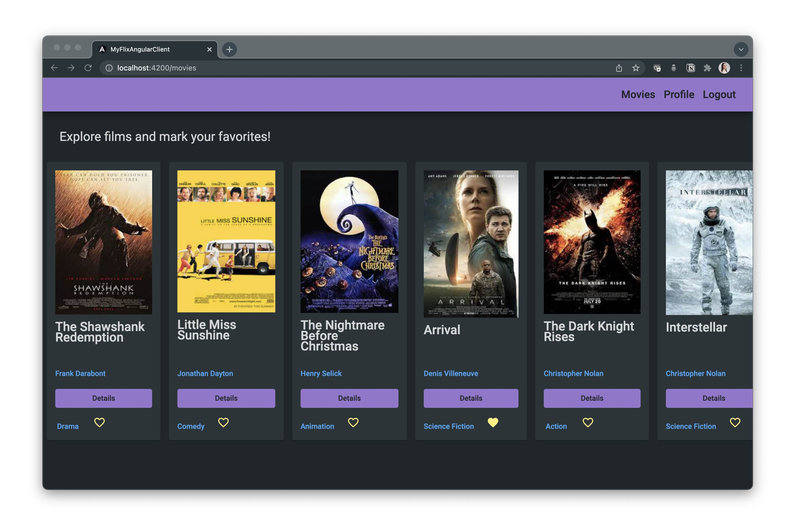
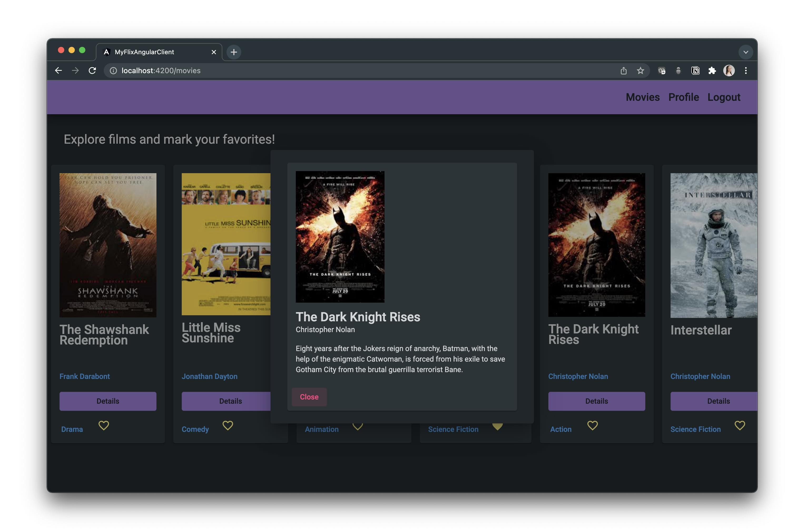
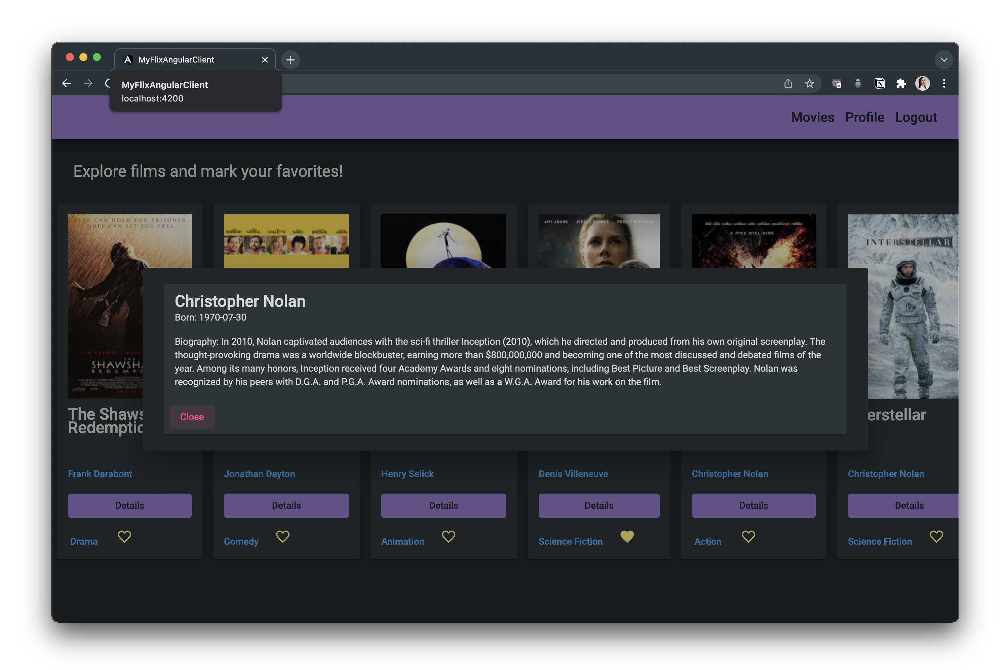
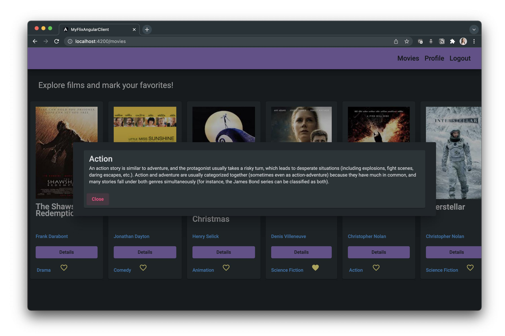
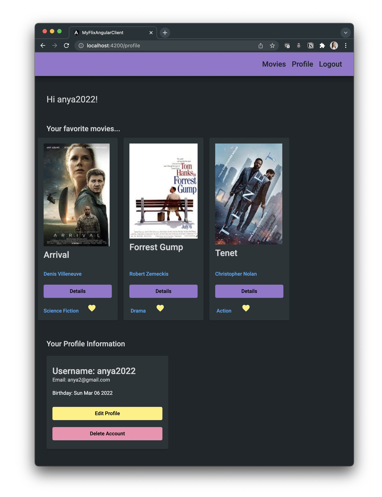
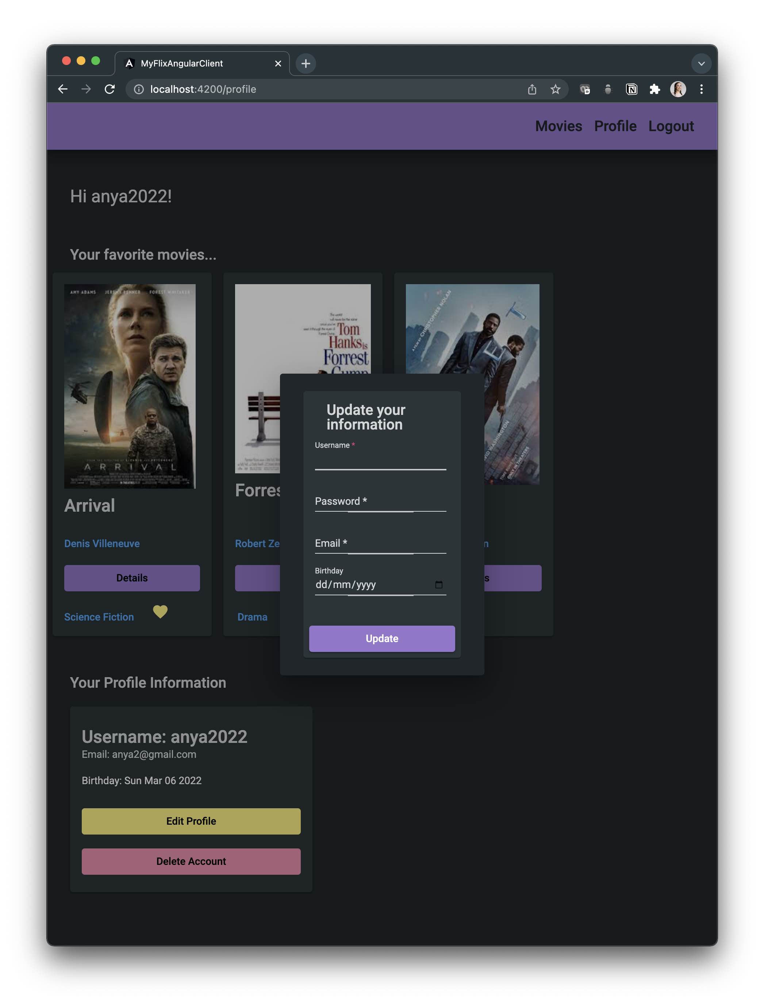
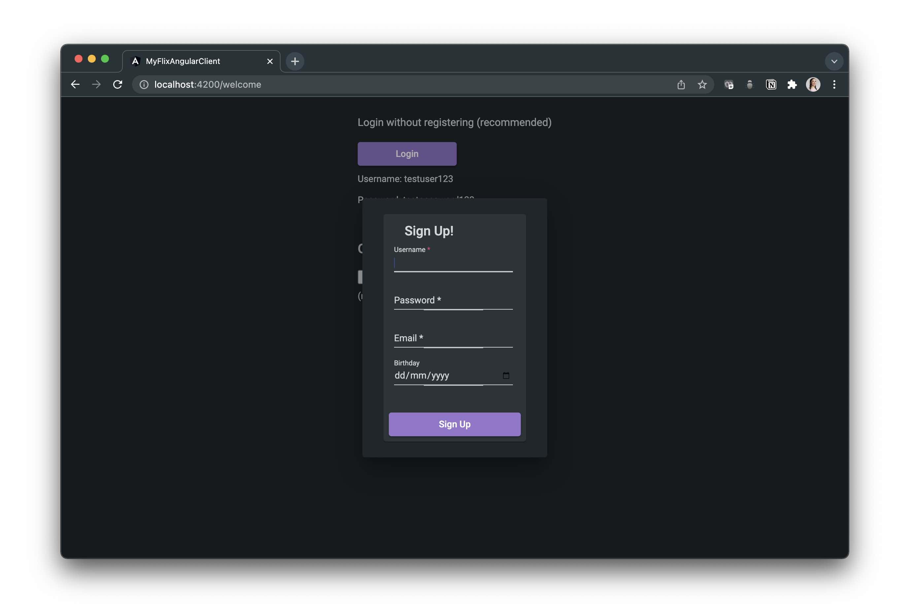
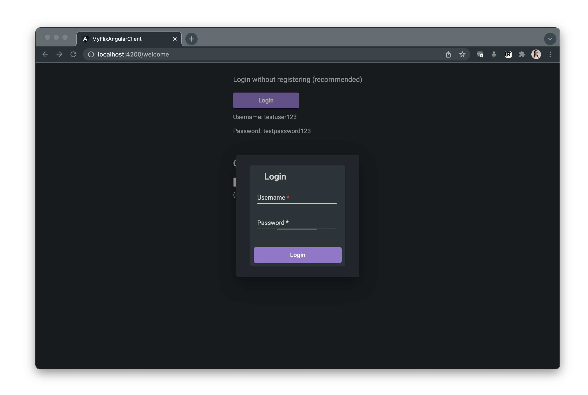

MyFlix App using MEAN
Movie Database, API and Client using MongoDB, Express, Angular and Node
This was a great opportunity to reuse my movie API and rebuild the myFlix client using the Angular framework. I found Angular to really shine when it comes to forms and dialogues, especially with single-page apps. The Angular framework is more complex than react however the cleanliness of the code made the process delightful. The client API routes were redefined very conveniently using the FetchApiDataService.
Some additoinal concepts, similar to seen in native apps, included:
- Interpolation. One-way data binding, where the data originates in the component and is rendered in the template (visual part), but not the other way around.
- Data-Binding to synchronize (or bind) what is seen in the UI with what is in the data source
- Template-driven forms, where the template (visual part with the input value) is the only source of truth and only the ngModel directive can access the form.
- Reactive forms, where the model component is the source of truth and the value is provided through the [formControl], which also allows for listening for changes in a model.
This is a 2-page app that makes use of dialogues. The UI takes on a dark theme with purple representing the primary calls to action, the blue representing secondary calls to action, the yellow color signifying data changes and finally bright pink for warnings (deleting profile) and pale pink for closing windows. The link to the repository can be found here.
MyFlix App in Angular
After loggin in, the user can see a library of movies pulled form the API and they can add or remove movies from their favorites.
Press the "Details" button to get a brief description of the movie plot.
Click the director to obtain a brief background about the director.
A link to the standard definition of the genre is also provided.
Each user has their own profile where they can see their favorite movies and profile information
Each user can change their username, password and date of birth.
MyFlix App is live and new users can optionally register and create their own profie if they want to.
For testing purposes, it is recommended to use the login provided.
The link to the live app can be found here